The Mahatma Letters to A. P. Sinnett
Letter No. 1
Simla, 1880. An editor asks for a miracle, and receives a refusal.
- 1The Marvels of Simla
- 2Unthinkable (in preparation)
- 3Rome Before Romulus
- 4The Modern Hookeses
- 5Ever Crescendo
- 6More Than One Martyr
- 7The Natural Shields
- 8At Mr. Hume's
- 9Work With What You Have
- 10Your Sincere Friend
- 11Coda
Chapter 1
The Marvels of Simla
Simla. The summer capital of British India. Early October, 1880.
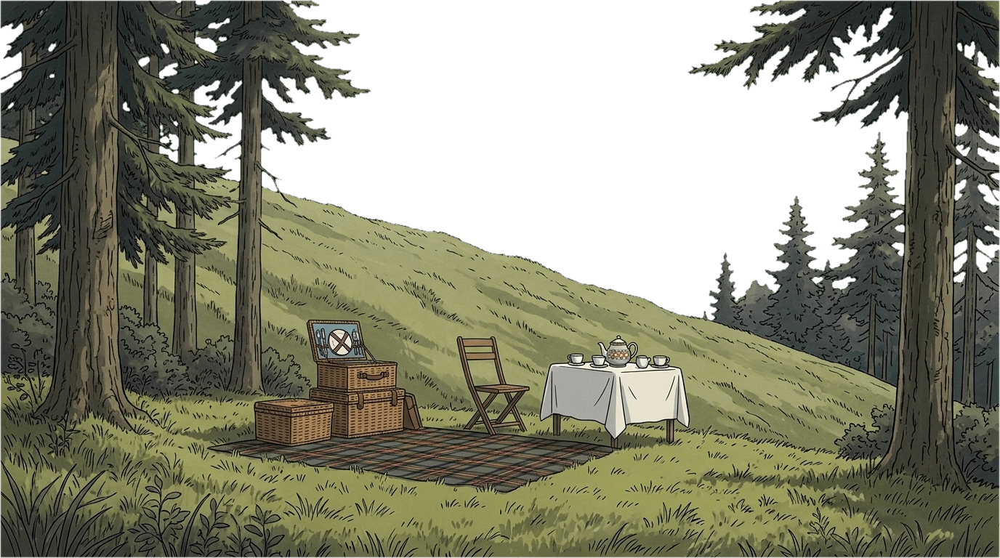
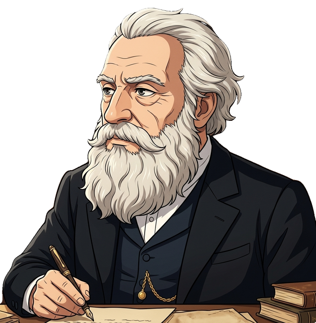
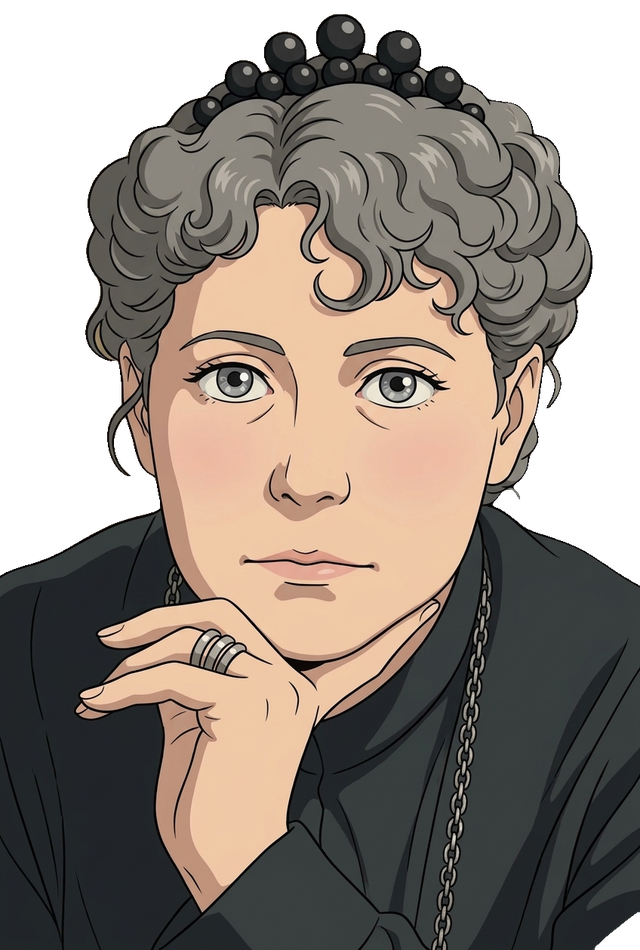
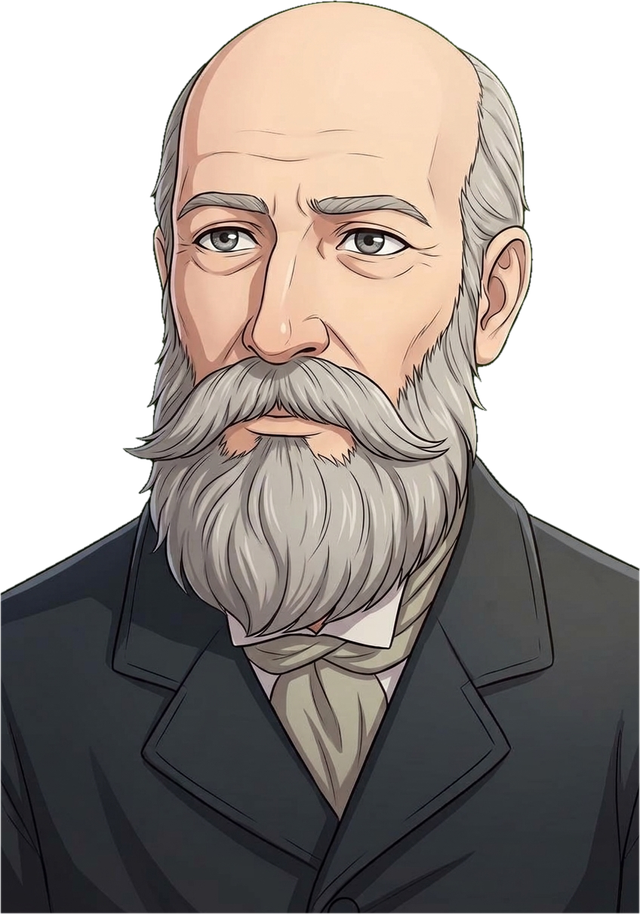
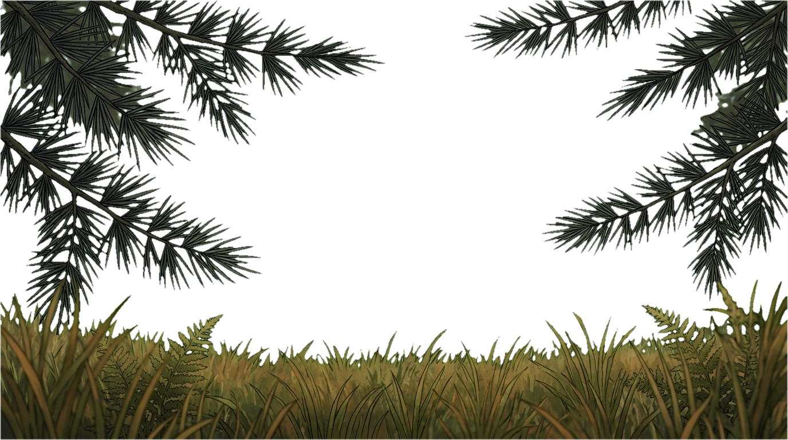
Deodar pines on a steep slope, and far off the white wall of the Himalaya. A picnic on rugs under the trees: a dozen English men and women in autumn tweeds and bonnets.
Mr. Sinnett, editor of the Pioneer, stands apart with his notebook, watching everything like a man who writes for a living. Madame Blavatsky sits heavily on a folding chair, bored by the English. Colonel Olcott sits beside her.
A servant lays out the tea things. Counts. Counts again.
ServantOne cup short, memsahib.
A guestThen someone must go without. Madame, I suppose you could not conjure us one?
Madame does not laugh. Slowly, she points at the ground between the roots of a tree.
BlavatskyDig. There.
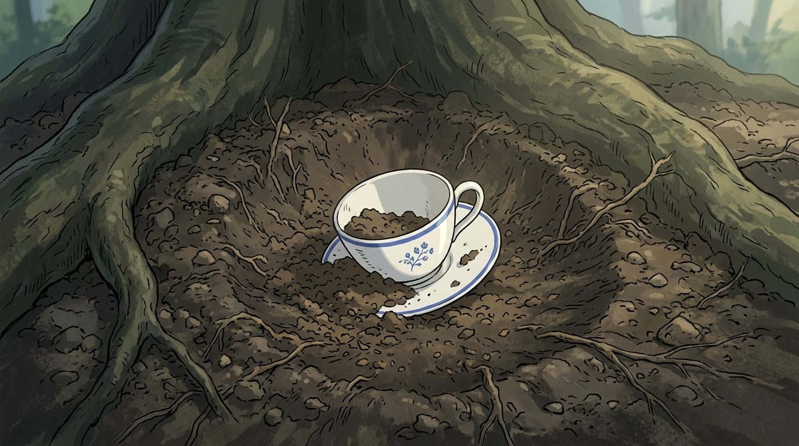
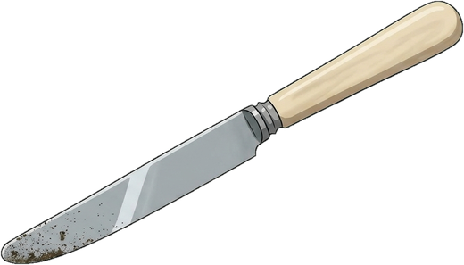
Someone snorts. A young officer grins, takes a knife from the hamper and kneels, playing along.
He scrapes at the earth. Roots. Stones. More earth.
His knife strikes something hard.
He stops grinning.
He brushes the soil away. White china. A cup, then a saucer, packed in earth. He holds them up beside the others.
They match the set.
Silence on the hillside. Then everyone speaks at once.
A guestIt can't be. It cannot be.
Another guest, dryA clever servant and a spade the night before.
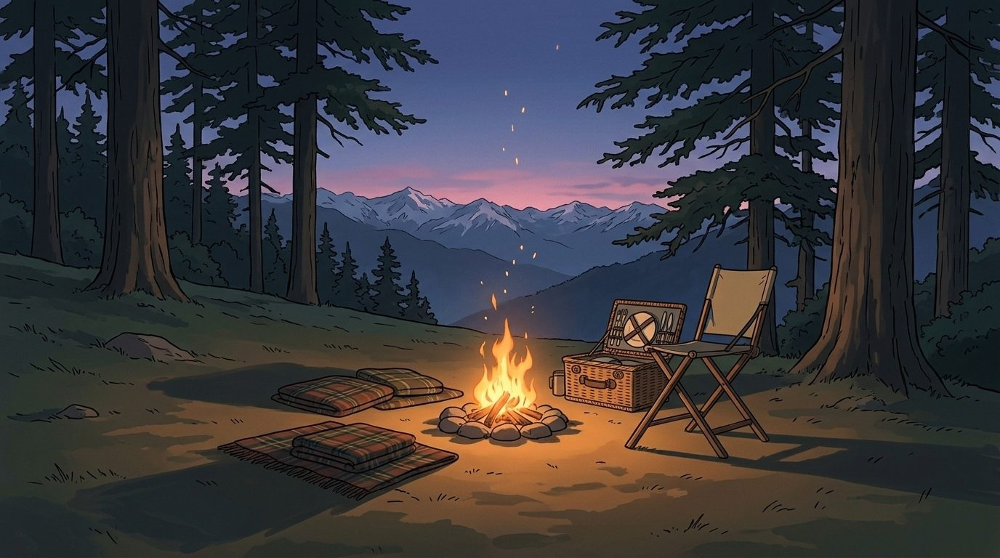
Sinnett, quietlyYou saw her. She never left that chair.
OlcottShe rarely needs to.
The party has thinned. Madame tears the corner from a cigarette paper and hands it to a guest to hold. Moments later the guest gasps at something in her palm. We do not see what she sees.
Sinnett sits a little apart, writing by firelight, filling page after page.
Patience Sinnett, from the darkAlfred, you will run out of paper before she runs out of wonders.
He smiles without looking up. Her hand rests on his shoulder for a moment, then is gone.
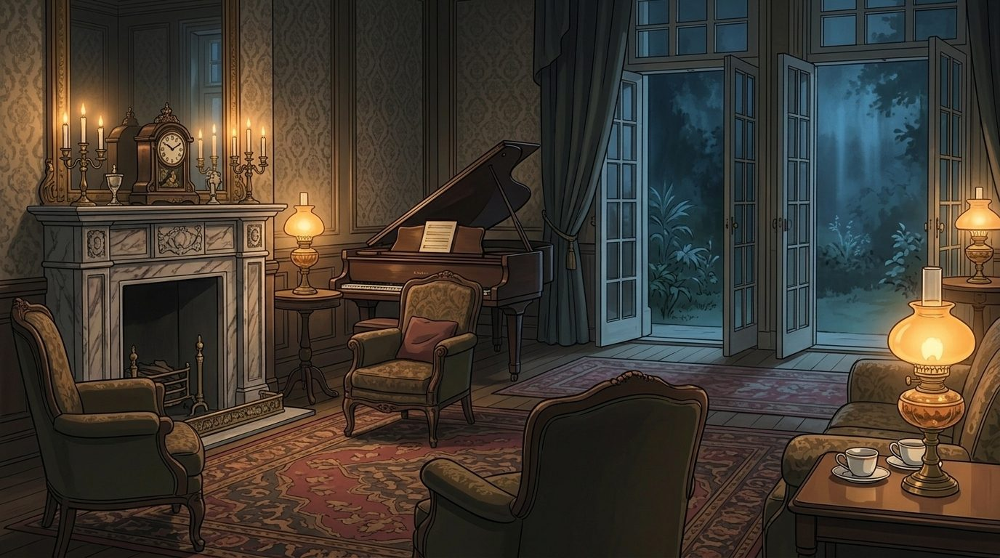
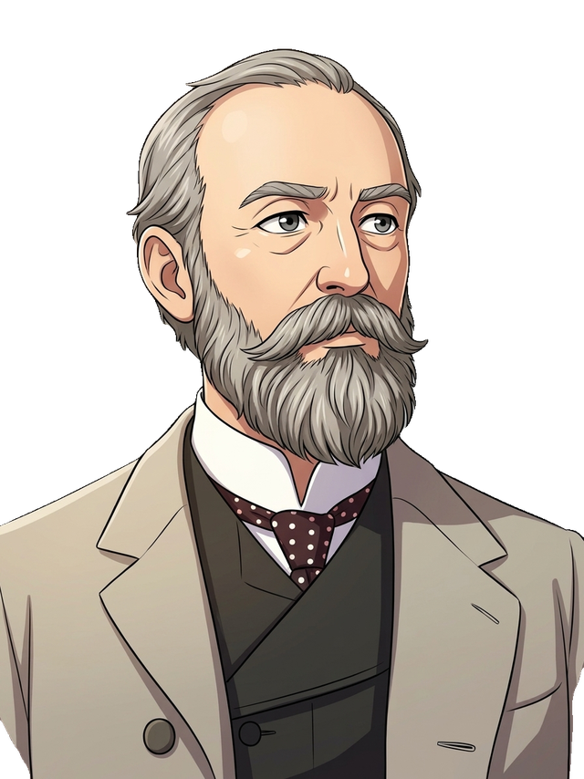
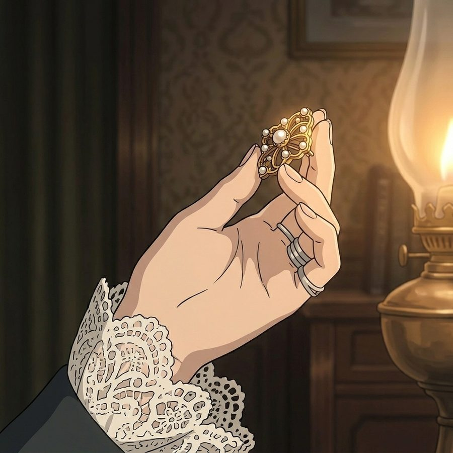
After dinner at Mr. Hume's. Guests come in from the garden, excited. A woman's hand holds a small brooch up to the lamp.
Mrs. HumeI lost it years ago. Years.
Madame stays in her chair, smoking. Hume does not move from the mantelpiece. He watches Madame Blavatsky, not the brooch.
SinnettWell, Hume?
Hume, pleasantlyWell. A charming evening, and a lady made very happy.
SinnettThat is not an answer.
HumeAsk me what I can prove, and I shall tell you: nothing, yet.
Ask him what a jury of sensible men would say, and Sinnett knows it already.
SinnettThen we must give the sensible men something they cannot explain away.
Across the room, Madame looks up and meets his eye. She has heard every word.
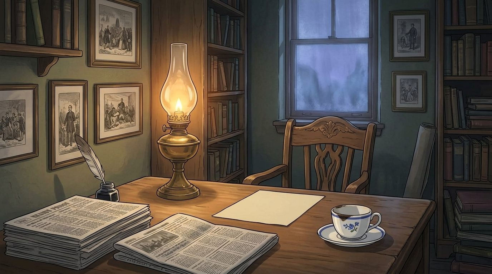
Later that night. A narrow, cluttered room. On the desk, the Pioneer, folded open at his own report of the Simla wonders. Beside it, another paper, open at a mocking reply. And the cup from the picnic: he has kept it.
Sinnett, to himselfOne case. One story. And they laugh at it over breakfast.
He sits, pulls a clean sheet toward him, and dips his pen.
…a test which no reasonable man could dispute…
…a newspaper, printed in London, here in Simla on the very day of its publication…
Give me that, and I will put it before the world. Half London would be converted if you could deliver them a Pioneer on its day of publication.
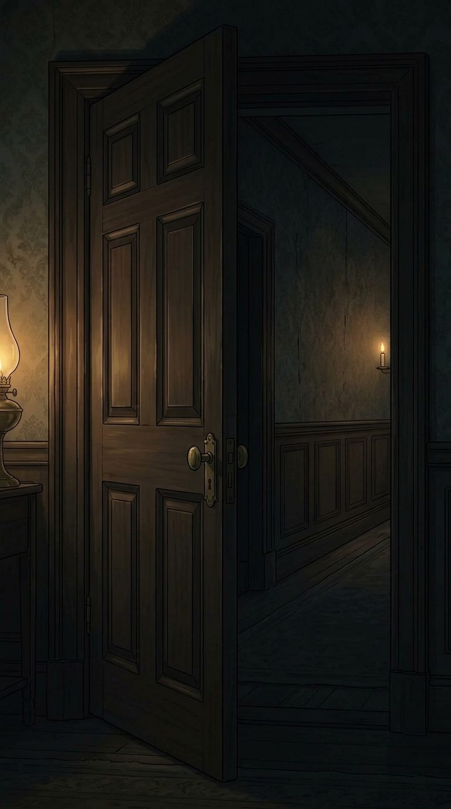
A knock. Madame Blavatsky in the doorway, a shawl around her shoulders, a candle in her hand.
BlavatskyYou are writing to them.
SinnettI am writing to whoever reads what I give you. Will you send it?
She takes the letter. She does not read it.
BlavatskyThey do not do tricks for editors, my dear Mr. Sinnett.
SinnettIt is not a trick if it is true. That is the whole point.
Blavatsky, tiredYou think the world is waiting for proof. You have not seen what the world does with it.
SinnettThen let them tell me so themselves.
She tucks the letter into her shawl.
BlavatskyThey will.
End of Chapter 1.
Next: Chapter 2: Unthinkable (in preparation)
The letter: The Mahatma Letters to A. P. Sinnett, Letter No. 1, ed. A. T. Barker (1923). This chapter is a dramatized prologue: its scenes and dialogue are invented from the historical context, not quoted from the letter. Illustrations generated with Google Gemini.